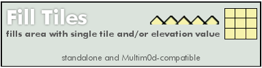

fill_tiles.lua |
|
|---|---|
Fill Tilesdec 19 2009 @jme fills a floor expanse to a specific tile and/or elevation Standalone & Multim0d-compatible  Properties section |
|
|
Metaplace Lua included script state variables via properties that could be hidden, exposed or persisted. Here there are "constant" properties as well as user-config properties. Vars deemed contstant-by-convention are indicated by ALL CAPS |
Define Properties()
inited = false
im_running = false
FILL_TILES_DEFAULT_X = 1
FILL_TILES_DEFAULT_Y = 1
FILL_TILES_DEFAULT_W = 1
FILL_TILES_DEFAULT_H = 1
FILL_TILES_DEFAULT_DELAY = 0
FILL_TILES_RESET_TILES = 1
FILL_TILES_TILE = 1
FILL_TILES_RESET_ELEV = 0
FILL_TILES_ELEV = 127
|
|
Some silly Tool issues compelled this bit of egregiousness. |
param_count = 9
|
|
User-accessible Properties |
fill_tiles_x = FILL_TILES_DEFAULT_X
PersistProperty('fill_tiles_x')
ExposeProperty('fill_tiles_x', 'upper-left x value of playback area (default: ' ..FILL_TILES_DEFAULT_X ..")")
fill_tiles_y = FILL_TILES_DEFAULT_Y
PersistProperty('fill_tiles_y')
ExposeProperty('fill_tiles_y', 'upper-left y value of playback area (default: ' ..FILL_TILES_DEFAULT_Y ..")")
fill_tiles_w = FILL_TILES_DEFAULT_W
PersistProperty('fill_tiles_w')
ExposeProperty('fill_tiles_w', 'playback area width (default: ' ..FILL_TILES_DEFAULT_W ..")")
fill_tiles_h = FILL_TILES_DEFAULT_H
PersistProperty('fill_tiles_h')
ExposeProperty('fill_tiles_h', 'playback area height (default: ' ..FILL_TILES_DEFAULT_H ..")")
fill_tiles_delay = FILL_TILES_DEFAULT_DELAY
PersistProperty('fill_tiles_delay')
ExposeProperty('fill_tiles_delay', 'Startup delay. (default: ' ..FILL_TILES_DEFAULT_DELAY ..")")
fill_tiles_reset_tiles = FILL_TILES_RESET_TILES
PersistProperty('fill_tiles_reset_tiles')
ExposeProperty('fill_tiles_reset_tiles', 'Fill all tiles in playback area. (caution!)', 'checkbox')
fill_tiles_tile = FILL_TILES_TILE
PersistProperty('fill_tiles_tile')
ExposeProperty('fill_tiles_tile', 'Tile to use as the fill tile. (default: ' ..FILL_TILES_TILE ..")")
fill_tiles_reset_elev = FILL_TILES_RESET_ELEV
PersistProperty('fill_tiles_reset_elev')
ExposeProperty('fill_tiles_reset_elev', 'Set elevation for playback area.(caution!)', 'checkbox')
fill_tiles_elev = FILL_TILES_ELEV
PersistProperty('fill_tiles_elev')
ExposeProperty('fill_tiles_elev', 'Elevation fill value. (default: ' ..FILL_TILES_ELEV ..")")
|
|
Specify the call signature here. This is just an informative string and should indicate all parameters (in order) needed to manually call this plugin. Param onchanges are caught and reverted, SEE "parm_changed" method |
PARAMS_SIGNATURE = " X, Y, WIDTH, HEIGHT, DELAY(ms), FILL-TILE? (0 or 1), TILE-VALUE, FILL-ELEV? (0 or 1), ELEVATION-VALUE "
PARAMS_SIGMSG = "sig used for Multim0d manual mode calls (opt)"
fill_tiles_signature = PARAMS_SIGNATURE
ExposeProperty('fill_tiles_signature', PARAMS_SIGMSG)
|
|
Standard required tool version, name and description fields |
bt_behavior = 1
bt_desc = 'fill tiles and/or elevation'
bt_name = 'fill_tiles'
bt_help_image = '204485:8'
bt_help_image_height = 100
end
|
Methods and Handlers[ Triggers would be called by the sim serverside, given the appropriate conditions ] param changed [Required Boilerplate] This is a mild bit of hackery. The Call Signature of an effect needed to be displayed on the Behavior Tool, but there was no way to write R/O text, only text that could be potentially altered by the user. As a workaround each Multim0d effect would respond to the BT onchange trigger in order to revert attempted changes to any public properties that needed to be R/O, such as the call signature. |
Trigger param_changed(owner, owner_id, script_id, prop)
local pname = self.bt_name .."_signature"
if (prop == pname) then
Debug("< SIG CHANGED > " .."script_id=" ..script_id .." owner_id=" ..owner_id)
SendTo(self, 'set_script_param', 0, owner, owner.id, script_id, prop, self.PARAMS_SIGNATURE)
Debug("reverting signature, you silly rabbit!")
end
end
|
|
Cleanup [API, Optional] Cleanup to restore source tiles to whatever they were prior to the effect run. Not really applicable for this effect. |
function fill_tiles_cleanup(do_cleanup,x0,y0,xm,ym,owner)
end
|
|
Shutdown [API, REQUIRED] Vary the internals as desired, just be sure to invoke a crisp shutdown! |
Trigger mod_shutdown()
if (self.im_running == true) then
Debug(self.bt_name .." mod_shutdown recieved")
end
self.im_running = false
end
|
|
Standalone Shutdown [API, Optional] only needed if your module has a standalone mode. |
Trigger fill_tiles_shutdown()
self.im_running = false
SendTo(self,'multimod_cmd_done',0)
Debug(self.bt_name .." shutdown called!")
end
|
|
Process a frame iteration
|
Trigger fill_tiles(x0,y0,xr, yr)
self.im_running = true
local ix = 0
local iy = 0
if (self.fill_tiles_reset_tiles ==1) then
Debug('run: tile fill...')
local ixm = x0 + xr -1
local iym = y0 + yr -1
for ix = x0, ixm do
for iy = y0, iym do
SetTileAt(ix,iy,self.fill_tiles_tile)
end
end
end
if (self.fill_tiles_reset_elev ==1) then
Debug('run: elevation fill...')
local xm = x0 + xr -1
local ym = y0 + yr -1
for ix=x0,xm do
for iy=y0,ym do
SetElevAt(ix,iy,self.fill_tiles_elev)
end
end
end
self.im_running = false
SendTo(self,'multimod_cmd_done',0)
Debug(self.bt_name .." completed.")
end
|
|
Init any one-time init items go here. Not much interesting in this one... |
function fill_tiles_init(owner)
owner.inited = true
end
|
|
Validate [API, Optional] Parameter validations. Validations will probably be custom for each effect, |
function fill_tiles_validate_params(owner,p)
p[1] = math.abs(p[1])
p[2] = math.abs(p[2])
p[3] = math.abs(p[3])
p[4] = math.abs(p[4])
p[5] = math.abs(p[5])
p[6] = math.abs(p[6])
p[7] = math.abs(p[7])
p[8] = math.abs(p[8])
p[9] = math.abs(p[9])
end
|
|
Trigger for standalone usage [API, Optional] only needed if your module has a standalone mode. If there is actually no Multim0d player and this module is not aready running |
Trigger use(user)
if (self.multimod_present == nil) then
Debug("- Standalone mode -")
if (self.im_running == false) then
self.im_running = true
Debug(self.bt_name ..' - running -')
SendTo(self,self.bt_name,self.fill_tiles_delay,self.fill_tiles_x,self.fill_tiles_y,self.fill_tiles_w,self.fill_tiles_h)
else
Debug("MANUAL HALT!")
SendTo(self,self.bt_name ..'_shutdown',0)
self.im_running = false
end
end
end
|
|
Main entry point [API, Required] : This is called by the Player and is passed a Player-opaque, possibly empty table of support params. This call starts the plugin running and should behave idempotently. + Indicate state change and initialize as needed.
And finally, call the handler. |
Trigger fill_tiles_startup(xparams)
if (self.im_running == false) then
self.im_running = true
if (self.inited == false) then
fill_tiles_init(self)
end
if (#xparams ~= 0) then
if (#xparams == self.param_count) then
fill_tiles_validate_params(self,xparams)
self.fill_tiles_x = xparams[1]
self.fill_tiles_y = xparams[2]
self.fill_tiles_w = xparams[3]
self.fill_tiles_h = xparams[4]
self.fill_tiles_delay = xparams[5]
self.fill_tiles_reset_tiles = xparams[6]
self.fill_tiles_tile = xparams[7]
self.fill_tiles_reset_elev = xparams[8]
self.fill_tiles_elev = xparams[9]
else
Debug(self.bt_name .." ERROR: incorrect number of playlist params")
end
end
Debug(self.bt_name ..' running...')
SendTo(self,self.bt_name,self.fill_tiles_delay,self.fill_tiles_x,self.fill_tiles_y,self.fill_tiles_w,self.fill_tiles_h)
else
Debug(self.bt_name ..' sez: not yet...')
self.im_running = false
end
end
|